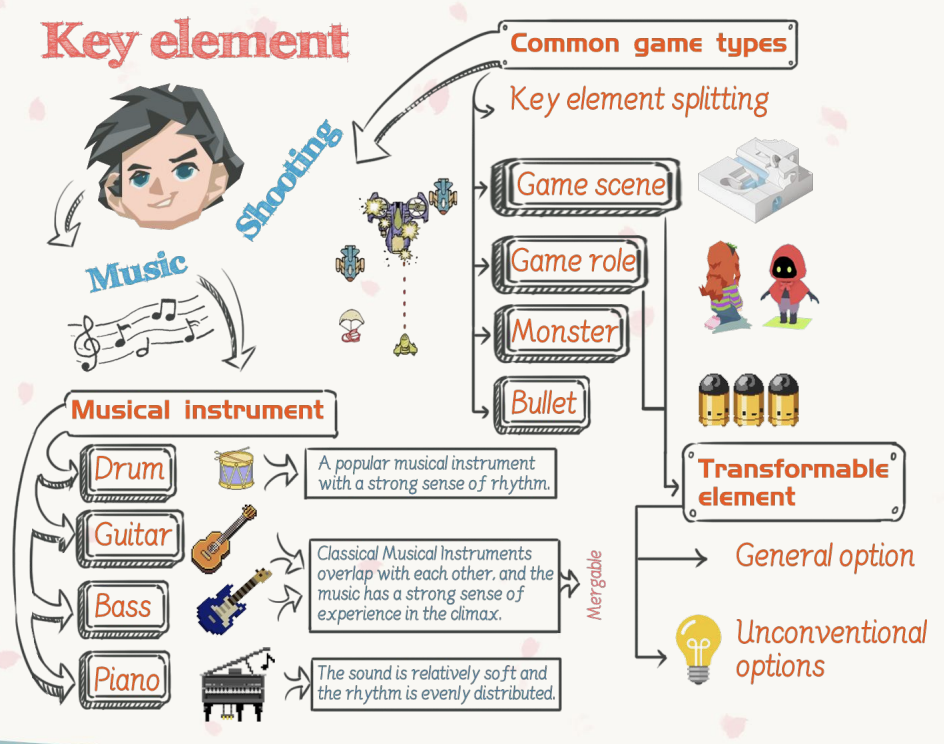
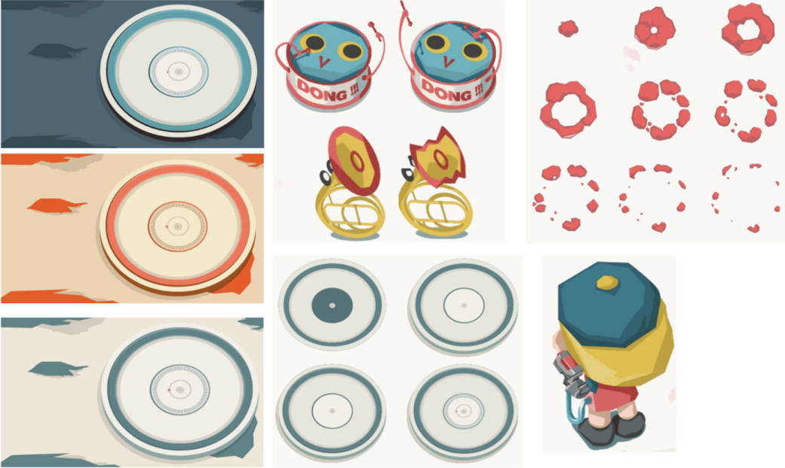
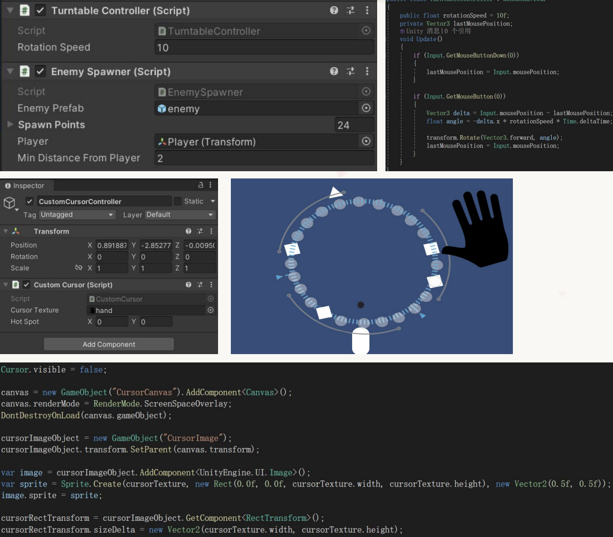
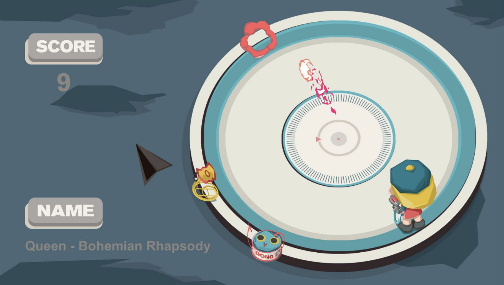

01 — 概念
角色与边界的反转
受《游戏设计艺术》（The Art of Game Design）启发，我想打破“玩家只能控制主角”的惯例。在大多数射击游戏里，你就是英雄——可如果你控制的是英雄周围的一切呢？
在 Rhythm Disc 中，玩家控制的是唱盘（也就是环境）和场景里的乐器怪物，间接帮助主角活下去。核心的紧张感来自同时兼顾音乐和战场。

头脑风暴图
02 — 核心机制
音乐系统
游戏的舞台是一台唱片机。怪物以乐器为原型——钢琴、吉他和鼓，各自对应唱盘上的一个区域。玩家进入不同区域时，对应乐器的音轨会成为主导，同时切换到另一种子弹。
钢琴区
柔和的配色，舒缓的节奏。敌人移动较慢——但可别掉以轻心。
鼓区
炽烈的橙红色调，高强度的鼓点。敌人刷新频率急剧上升。
吉他区
硬朗又带棱角，中速的混乱。敌人伤害更高，需要精准把握时机。

美术展示
03 — 程序
实现原理
所有核心系统都用 Unity（C#）实现。技术上最有意思的部分，是让敌人的生成与音乐节拍实时同步。
-
唱盘控制器编写了唱盘的旋转逻辑和自定义光标，模拟“搓碟”——玩家用鼠标真实地拨动唱盘，以此控制游戏环境。
-
节拍检测流程用 Python 脚本提取《Bohemian Rhapsody》的节拍，输出一个包含节拍数组的 JSON 文件。Unity 在运行时读取这个文件，让敌人的生成与音乐同步。
-
动态区域刷怪三个多边形碰撞体划出钢琴 / 鼓 / 吉他三个区域。玩家进入某个区域后，对应音轨成为主导，背景随之变化，该乐器类型的敌人开始踩着节拍在随机位置生成。
-
多音轨音频把《Bohemian Rhapsody》原曲分离成钢琴、鼓、吉他三条乐器分轨，每条分轨绑定一个区域——玩家在关卡中移动时，就像在亲手给这首歌“混音”。

程序实现
04 — 玩法
实机演示
在最终的游戏里，玩家扮演一位 DJ 指挥官：转动唱盘穿梭于各个区域，在乐器怪物淹没主角之前把它们击落，并在战斗中感受《Bohemian Rhapsody》节奏的变化。每个区域都需要不同的打法。

游戏截图